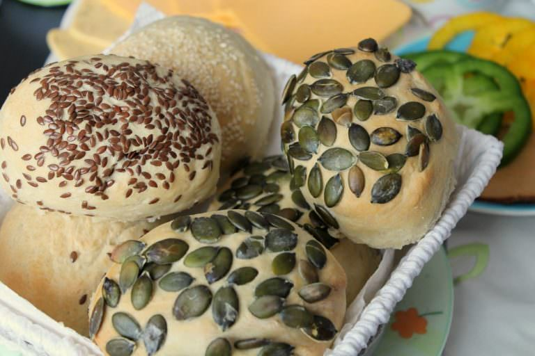
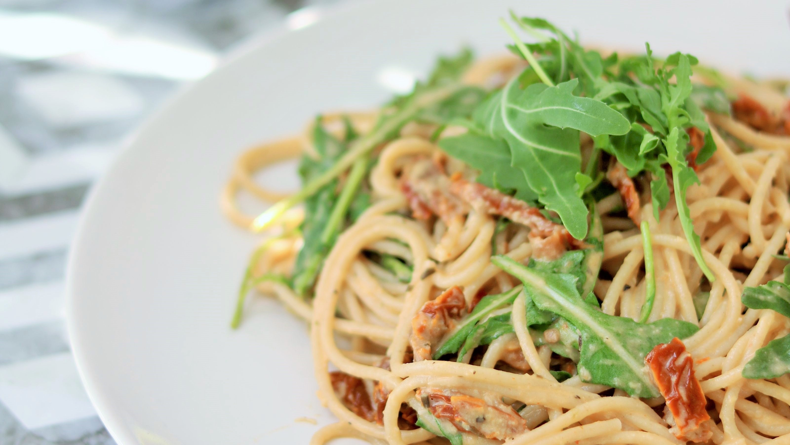

Kochlessia
vegane Speisen
Sonntagsbrötchen

Du brauchst
- 500 g Mehl
- 1 TL Zucker
- 1 Packung Trockenhefe
- 280 ml lauwarmes Wasser
- 1 EL Sonnenblumenöl
- Wer mag: 1/2 TL Salz
- 1 TL schwarzer Pfeffer, gemahlen
- Extra: Mohn (z.B. Lidl), Leinsamen (z.B. Verival), Kürbiskerne (z.B. Verival)
Zubereitung
- Die Zutaten für den Teig gründlich für 3-4 Minuten miteinander verkneten und abgedeckt in einer Schüssel an
einem warmen Ort für eine Stunde gehen lassen.
- Ohne Brötchenbäcker: Den Backofen auf 180 Grad Umluft (200 Grad Ober- und Unterhitze) vorheizen.
Wer mit Brötchenbäcker backt, sollte den Ofen ca. 20 Grad wärmer einstellen.
- Man formt aus dem Teig kleine Brötchen und legt diese entweder auf ein Backblech oder auf den Brötchenbäcker
(diesen noch mit Wasser befüllen).
- Die Oberfläche der Brötchen befeuchtet man etwas mit wenig Wasser und gibt den Mohn, Sesam, oder was man
halt nimmt auf die Brötchen. Das Wasser ist also wie eine art „Leim“ für den Mohn.
- Die Brötchen für ca. 25 Minuten backen und warm genießen
Hummuspasta

Du brauchst
- 300 g Spaghetti
- 40 g getrocknete Tomaten, in Öl eingelegt
- 50 g Hummus
- 1 Handvoll Rucola
- 1 TL Olivenöl
- Salz, Pfeffer
Zubereitung
- Spaghetti in kochendem Salzwasser al dente kochen. Das Wasser anschließend abgießen.
- Rucola waschen und trocken schleudern. Getrocknete Tomaten abtropfen lassen und grob würfeln.
- Das Olivenöl, sowie den Hummus zur Pasta in den Topf geben. Tomatenwürfel und Rucola dazugeben
und alles kurz durchmischen. 1-2 TL des Tomatenöls ebenfalls in den Topf geben. Mit Salz und
Pfeffer abschmecken und nochmal gut durchmischen. Sofort servieren.
Veganes Pad Thai
Du brauchst
Tofu & Reisnudeln
- 250g Tofu nature, in Stücke gebrochen
- 1EL Öl zum Braten
- 250g Reisnudeln
- Wasser, kochend
Gemüse
- 1EL Öl zum Braten
- 4 Knoblauchzehen, gepresst
- 1 rote Peperoni, in Streifen
- 1Rüebli, in Streifen
- 3Bundzwiebeln mit dem Grün, in Ringen, Grün beiseite gestellt
Sauce
- 1 ½dl Gemüsebouillon
- 3EL Ahornsirup
- 2EL Sojasauce
- 1EL Hot Chili Sauce (z.B. Sriracha)
- ½ Limette, nur der Saft
- 1EL Maizena
- 3EL Wasser, kalt
Anrichten
- ½ Limette, in Schnitzen
- 1EL gesalzene, geröstete Erdnuss, grob gehackt
- ein wenig Koreander
Zubereitung der Reisnudeln
Tofu im Wok oder in einer Bratpfanne im heissen Öl anbraten, in eine Schüssel geben,
beiseite stellen. Reisnudeln in einer Schüssel mit kochendem Wasser übergiessen, zugedeckt
ca. 10 Min. quellen lassen, abtropfen, beiseite stellen.
Zubereitung der Gemüse
Öl im Wok oder in einer Bratpfanne erhitzen, Bundzwiebeln ca. 1 Min. rührbraten, Knoblauch
beigeben, 1 Min. mitbraten, Peperoni und Rüebli beigeben, ca. 2 Min. fertigbraten.
Zubereitung der Sauce
Bouillon und alle Zutaten bis und mit Limettensaft zum Gemüse geben, aufkochen. Maizena
mit dem Wasser anrühren, beigeben, aufkochen, einige Min. köcheln. Beiseite gestellten
Tofu, Reisnudeln und die Hälfte des Bundzwiebelgrüns beigeben.
Anrichten
Pad Chai in Schalen anrichten, mit dem restlichen Bundzwiebelgrün, Limettenschnitzen,
Erdnüssen und Koriander bestreuen.